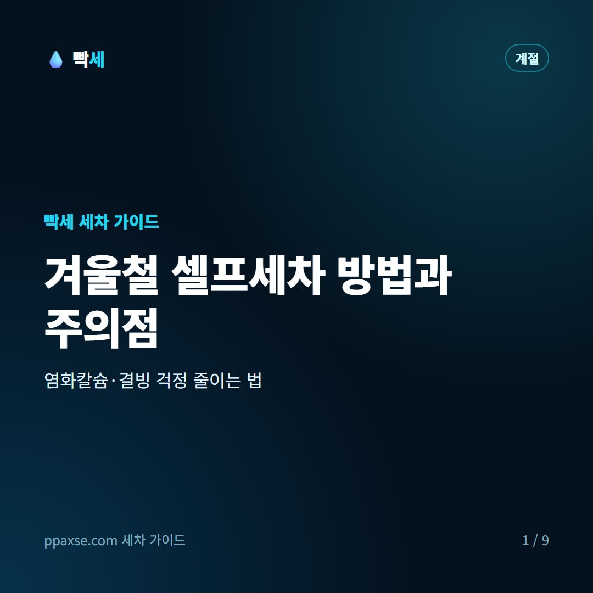
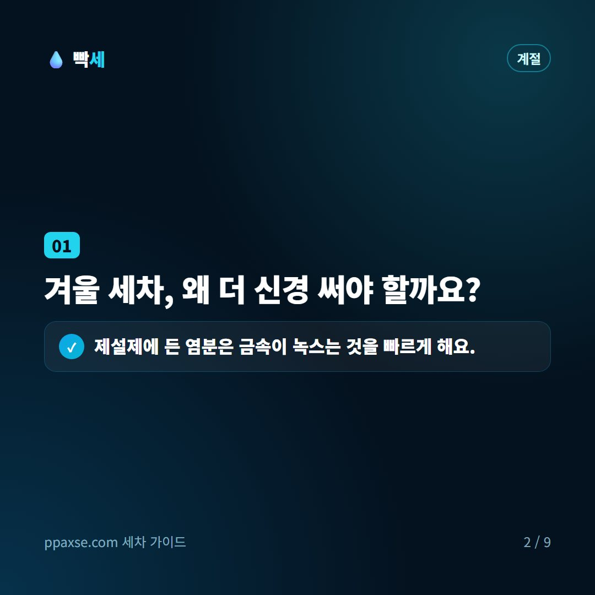
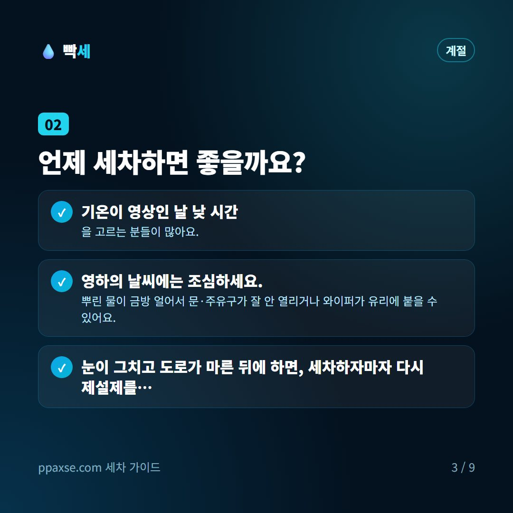
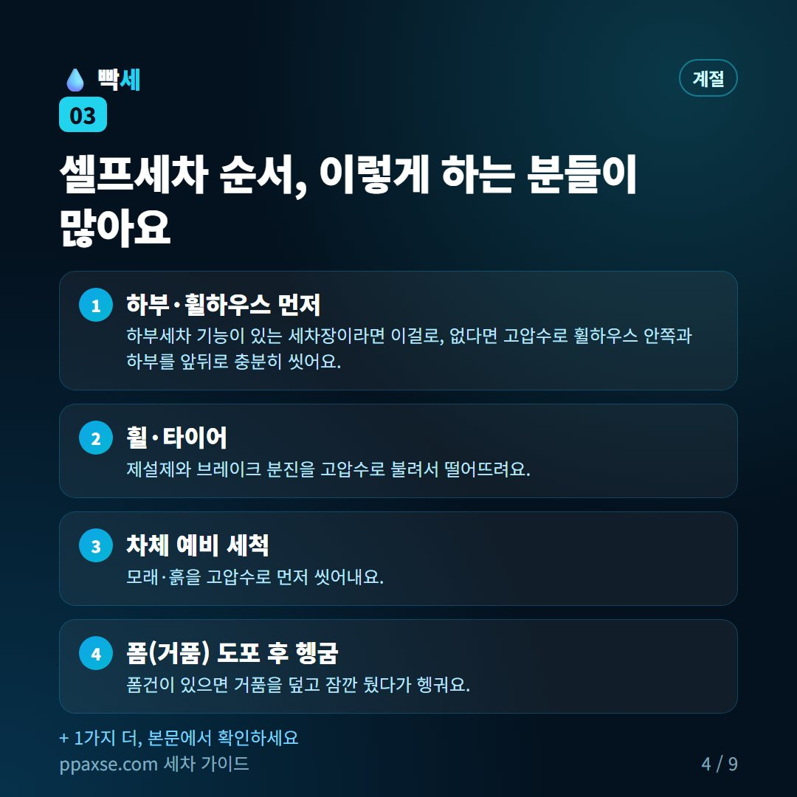
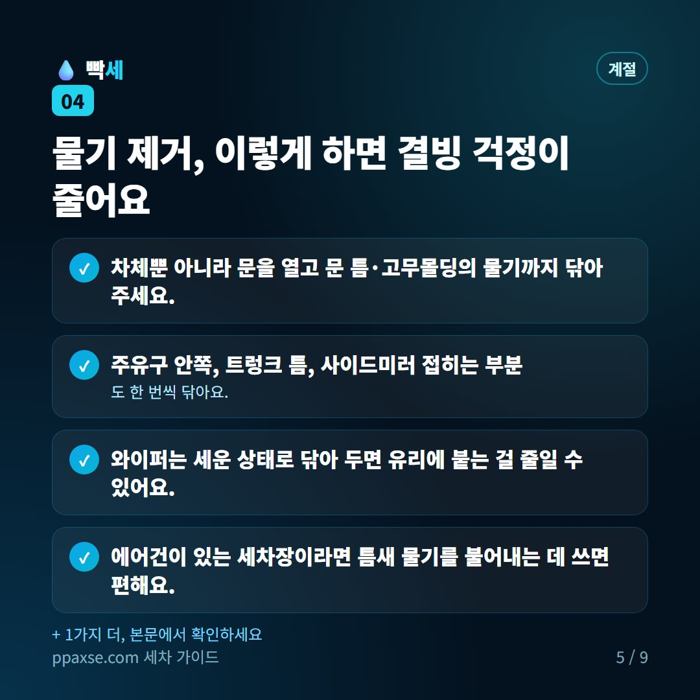
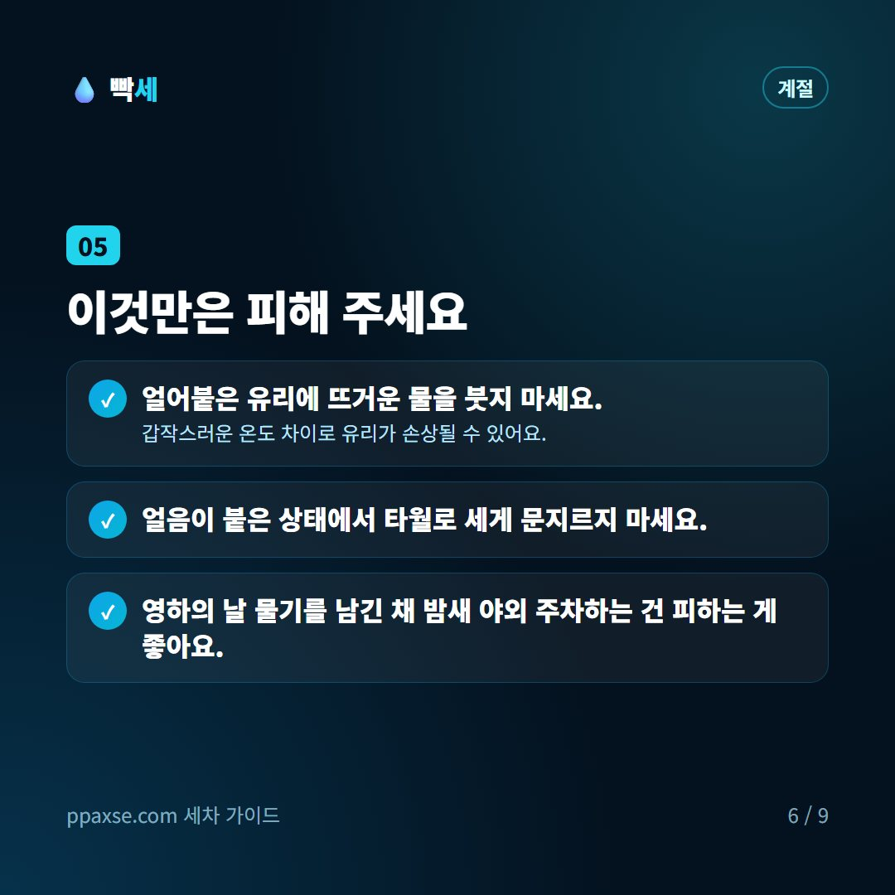
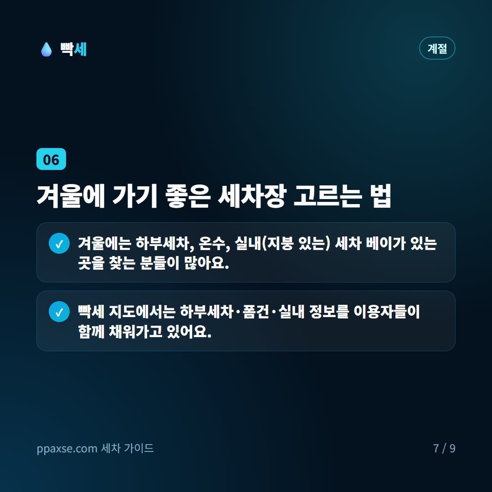

겨울철 셀프세차 방법과 주의점 — 염화칼슘·결빙 걱정 줄이는 법
겨울에는 "어차피 또 더러워질 텐데" 하고 세차를 미루기 쉬워요. 그런데 겨울이야말로 세차를 오래 거르지 않는 게 좋은 계절이에요. 도로에 뿌리는 제설제(염화칼슘 등)가 차 아래쪽과 휠에 달라붙어 오래 남기 때문이에요.

세차 방법은 사람마다 다르고, 정해진 정답이 있는 건 아니에요. 이 글은 많은 분들이 하는 방법을 기본으로, 다르게 하는 분들의 이유도 함께 정리했어요.
겨울 세차, 왜 더 신경 써야 할까요?

제설제에 든 염분은 금속이 녹스는 것을 빠르게 해요. 눈 녹은 물과 함께 차체 하부·휠하우스·브레이크 주변에 튀어 붙고, 마른 뒤에도 하얗게 남아 있다가 습기가 생길 때마다 다시 녹아요. 그래서 겨울 세차에서는 겉면 광택보다 하부와 휠의 염분을 씻어내는 것이 가장 중요해요. 이 부분은 의견이 크게 갈리지 않는 편이에요.
언제 세차하면 좋을까요?

- 기온이 영상인 날 낮 시간을 고르는 분들이 많아요. 해가 있을 때 하면 물기가 얼기 전에 닦아낼 여유가 생겨요.
- 영하의 날씨에는 조심하세요. 뿌린 물이 금방 얼어서 문·주유구가 잘 안 열리거나 와이퍼가 유리에 붙을 수 있어요.
- 눈이 그치고 도로가 마른 뒤에 하면, 세차하자마자 다시 제설제를 뒤집어쓰는 일을 줄일 수 있어요. 반대로 "눈 온 직후 염분이 붙어 있는 기간을 줄이는 게 먼저"라며 바로 하부세차부터 하는 분들도 있어요. 둘 다 이유가 있는 선택이에요.
셀프세차 순서, 이렇게 하는 분들이 많아요

아래는 많이 쓰는 순서예요. 순서에 대해서는 의견이 꽤 갈리니, 정답이라기보다 빡세가 생각하는 기본 흐름 정도로 봐 주세요.
- 하부·휠하우스 먼저 — 하부세차 기능이 있는 세차장이라면 이걸로, 없다면 고압수로 휠하우스 안쪽과 하부를 앞뒤로 충분히 씻어요. 겨울에 가장 중요한 부분이라 먼저 확실히 해 두려는 거예요.
- 휠·타이어 — 제설제와 브레이크 분진을 고압수로 불려서 떨어뜨려요.
- 차체 예비 세척 — 모래·흙을 고압수로 먼저 씻어내요. 겨울 먼지에는 모래가 섞여 있어서, 이걸 건너뛰고 바로 문지르면 흠집이 나기 쉬워요.
- 폼(거품) 도포 후 헹굼 — 폼건이 있으면 거품을 덮고 잠깐 뒀다가 헹궈요. 추운 날엔 오래 두지 않는 편이 좋아요.
- 물기 제거 — 겨울엔 이 단계가 특히 중요해요. 아래에서 따로 정리했어요.
이런 방법도 있어요. 차체를 씻으면 위에서 흘러내린 오염이 다시 하부로 떨어지니, 하부세차를 마지막에 한 번 더 하거나 아예 마지막에만 하는 분들도 있어요. 또 고압수를 위에서 아래로 쏘는 분이 많지만, 아래를 먼저 불린 뒤 위에서 내려오는 분들도 있어요. 세차장 시설과 차 상태에 따라 편한 쪽을 고르시면 돼요.
물기 제거, 이렇게 하면 결빙 걱정이 줄어요

- 차체뿐 아니라 문을 열고 문 틈·고무몰딩의 물기까지 닦아 주세요. 여기가 얼면 다음 날 문이 안 열릴 수 있어요.
- 주유구 안쪽, 트렁크 틈, 사이드미러 접히는 부분도 한 번씩 닦아요.
- 와이퍼는 세운 상태로 닦아 두면 유리에 붙는 걸 줄일 수 있어요.
- 에어건이 있는 세차장이라면 틈새 물기를 불어내는 데 쓰면 편해요.
- 세차 직후엔 브레이크 주변이 젖어 있어 제동감이 평소와 다를 수 있어요. 출발 직후 몇 번 브레이크를 살짝 밟아 반응을 확인해 주세요. 잠깐 주행하면 물기가 마르는 데도 도움이 돼요.
이것만은 피해 주세요

- 얼어붙은 유리에 뜨거운 물을 붓지 마세요. 갑작스러운 온도 차이로 유리가 손상될 수 있어요.
- 얼음이 붙은 상태에서 타월로 세게 문지르지 마세요. 얼음 알갱이가 흠집을 낼 수 있어요.
- 영하의 날 물기를 남긴 채 밤새 야외 주차하는 건 피하는 게 좋아요.
겨울에 가기 좋은 세차장 고르는 법

겨울에는 하부세차, 온수, 실내(지붕 있는) 세차 베이가 있는 곳을 찾는 분들이 많아요. 바람을 막아 주는 실내 베이는 물이 덜 얼고, 온수는 손이 덜 시려 꼼꼼하게 할 수 있어요. 다만 이런 시설은 세차장마다 다르고 자주 바뀌어서, 직접 가 본 사람의 정보가 가장 정확해요.
빡세 지도에서는 하부세차·폼건·실내 정보를 이용자들이 함께 채워가고 있어요. 지역별 목록은 지역별 세차장 모음에서 볼 수 있어요.
셀프세차·노터치·손세차를 종류별로 골라 보고, 폼건·온수·하부세차 같은 시설 정보도 확인할 수 있어요.
🗺️ 세차장 지도 열기✏️ 자주 가는 세차장에 한마디 남기기🎁 한마디를 남기면 가입 없이도 매주 기프티콘 추첨에 응모돼요.